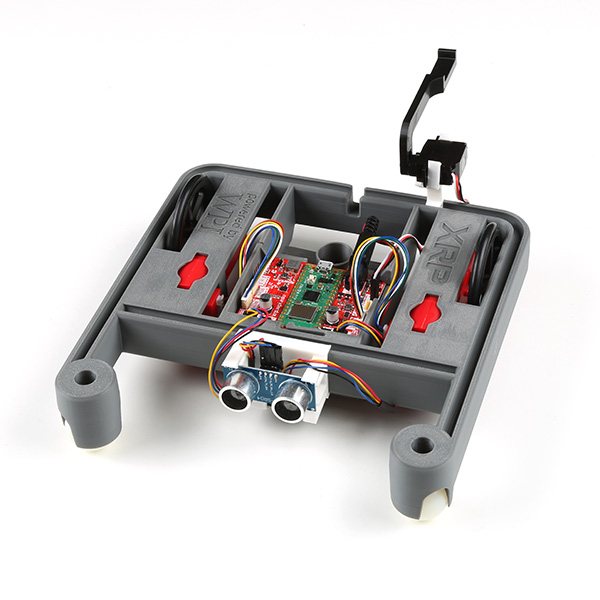

XRPLib - Table of Contents¶
{kind=link}
API Reference¶
Hardware¶
- class XRPLib.motor.SinglePWMMotor(in1_direction_pin: int | str, in2_speed_pin: int | str, flip_dir: bool = False)¶
A simple class handling direction and power sets for DC motors on the XRP robots
This version is used for the XRP Beta, which uses the rp2040 processor
- brake()¶
- coast()¶
- class XRPLib.motor.DualPWMMotor(in1_pwm_forward: int | str, in2_pwm_backward: int | str, flip_dir: bool = False)¶
A simple class handling effort setting for DC motors on the XRP robots
This version of the Motor class is used for the official release of the XRP
- brake()¶
Powers the motor in both directions at the same time, enabling it to hold position
- coast()¶
Disables the motor in both directions at the same time, enabling it to spin freely
- class XRPLib.encoded_motor.EncodedMotor(motor, encoder: Encoder)¶
- ZERO_EFFORT_BREAK = True¶
- ZERO_EFFORT_COAST = False¶
- brake()¶
Causes the motor to resist rotation.
- coast()¶
Allows the motor to spin freely.
- classmethod get_default_encoded_motor(index: int = 1)¶
Get one of the default XRP motor instances. These are singletons, so only one instance of each of these will ever exist. Raises an exception if an invalid index is requested.
- Parameters:
index (int) – The index of the motor to get; 1 for left, 2 for right, 3 for motor 3, 4 for motor 4
- get_position() float¶
- Returns:
The position of the encoded motor, in revolutions, relative to the last time reset was called.
- Return type:
- get_position_counts() int¶
- Returns:
The position of the encoded motor, in encoder counts, relative to the last time reset was called.
- Return type:
- reset_encoder_position()¶
Resets the encoder position back to zero.
- set_effort(effort: float)¶
- Parameters:
effort (float) – The effort to set this motor to, from -1 to 1
- set_speed(speed_rpm: float = None)¶
Sets target speed (in rpm) to be maintained passively Call with no parameters or 0 to turn off speed control
- Parameters:
target_speed_rpm (float, or None) – The target speed for the motor in rpm, or None
- set_speed_controller(new_controller: Controller)¶
Sets a new controller for speed control
- Parameters:
new_controller (Controller) – The new Controller for speed control
- set_zero_effort_behavior(brake_at_zero_effort)¶
Sets the behavior of the motor at 0 effort to either brake (hold position) or coast (free spin) :param brake_at_zero_effort: Whether or not to brake at 0 effort. Can use EncodedMotor.ZERO_EFFORT_BREAK or EncodedMotor.ZERO_EFFORT_COAST for clarity. :type brake_at_zero_effort: bool
- class XRPLib.motor_group.MotorGroup(*motors: EncodedMotor)¶
A wrapper class for multiple motors, allowing them to be treated as one motor.
- Parameters:
motors (tuple<EncodedMotor>) – The motors to add to this group
- add_motor(motor: EncodedMotor)¶
- Parameters:
motor (EncodedMotor) – The motor to add to this group
- get_position() float¶
- Returns:
The average position of all motors in this group, in revolutions, relative to the last time reset was called.
- Return type:
- get_position_counts() int¶
- Returns:
The average position of all motors in this group, in encoder counts, relative to the last time reset was called.
- Return type:
- remove_motor(motor: EncodedMotor)¶
- Parameters:
motor (EncodedMotor) – The motor to remove from this group
- reset_encoder_position()¶
Resets the encoder position of all motors in this group back to zero.
- set_effort(effort: float)¶
- Parameters:
effort (float) – The effort to set all motors in this group to, from -1 to 1
- set_speed(target_speed_rpm: float = None)¶
Sets target speed (in rpm) to be maintained passively by all motors in this group Call with no parameters to turn off speed control
- Parameters:
target_speed_rpm (float, or None) – The target speed for these motors in rpm, or None
- set_speed_controller(new_controller)¶
- Parameters:
new_controller (Controller) – The new Controller for speed control
- class XRPLib.servo.Servo(signal_pin: int | str)¶
A simple class for interacting with a servo through PWM
- free()¶
Allows the servo to spin freely without holding position
- classmethod get_default_servo(index: int)¶
Gets one of the default XRP servo instances. These are singletons, so only one instance of each servo will ever exist. Raises an exception if an invalid index is requested.
- Parameters:
index (int) – The index of the servo to get (1-4; Beta only has 1 and 2)
Sensors¶
- class XRPLib.encoder.Encoder(index, encAPin: int | str, encBPin: int | str)¶
Uses the on board PIO State Machine to keep track of encoder positions. Only 4 encoders can be instantiated this way.
- Parameters:
- get_position()¶
- Returns:
The position of the encoded motor, in revolutions, relative to the last time reset was called.
- Return type:
- get_position_counts()¶
- Returns:
The position of the encoded motor, in counts, relative to the last time reset was called.
- Return type:
- reset_encoder_position()¶
Resets the encoder position to 0
- resolution = 585.0¶
- class XRPLib.rangefinder.Rangefinder(trigger_pin: int | str = 'RANGE_TRIGGER', echo_pin: int | str = 'RANGE_ECHO', timeout_us: int = 500 * 2 * 30)¶
A basic class for using the HC-SR04 Ultrasonic Rangefinder. The sensor range is between 2cm and 4m. Timeouts will return a MAX_VALUE (65535) instead of raising an exception.
- Parameters:
trigger_pin (int) – The number of the pin on the microcontroller that’s connected to the
Trigpin on the HC-SR04.echo_pin (int) – The number of the pin on the microcontroller that’s connected to the
Echopin on the HC-SR04.timeout_us (int) – Max microseconds seconds to wait for a response from the sensor before assuming it isn’t going to answer. By default set to 30,000 us (0.03 s)
- classmethod get_default_rangefinder()¶
Get the default XRP rangefinder instance. This is a singleton, so only one instance of the rangefinder will ever exist.
- class XRPLib.reflectance.Reflectance(leftPin: int | str = 'LINE_L', rightPin: int | str = 'LINE_R')¶
Implements for a reflectance sensor using the built in 12-bit ADC. Reads from analog in and converts to a float from 0 (white) to 1 (black)
- Parameters:
- classmethod get_default_reflectance()¶
Get the default XRP reflectance sensor instance. This is a singleton, so only one instance of the reflectance sensor will ever exist.
Miscellaneous¶
- class XRPLib.controller.Controller¶
An abstract class to be entended to demonstrate different types of control. A PID subclass has also been provided
- clear_history()¶
Clears all past data, such as integral sums or any other previous data
- class XRPLib.pid.PID(kp=1.0, ki=0.0, kd=0.0, min_output=0.0, max_output=1.0, max_derivative=None, max_integral=None, tolerance=0.1, tolerance_count=1)¶
Bases:
Controller- Parameters:
kp – proportional gain
ki – integral gain
kd – derivative gain
min_output – minimum output
max_output – maximum output
max_derivative – maximum derivative (change per second)
max_integral – maximum integral windup allowed (will cap integral at this value)
tolerance – tolerance for exit condition
tolerance_count – number of times the error needs to be within tolerance for is_done to return True
- clear_history()¶
Clears all past data, such as integral sums or any other previous data
- is_done() bool¶
- Returns:
if error is within tolerance for numTimesInTolerance consecutive times, or timed out
- Return type:
- class XRPLib.timeout.Timeout(timeout)¶
Starts a timer that will expire after the given timeout.
- Parameters:
timeout (float) – The timeout, in seconds
- is_done()¶
- Returns:
True if the timeout has expired, False otherwise
- class XRPLib.webserver.Webserver¶
Host a webserver for the XRP v2 Robot; Register your own callbacks and log your own data to the webserver using the methods below.
- add_button(button_name: str, function)¶
Register a custom button to be displayed on the webserver
- Parameters:
button_name (str) – The label for the button as it will be displayed, must be unique
function (function) – The function to be called when the button is pressed
- connect_to_network(ssid: str = None, password: str = None, timeout=10)¶
Connect to a wifi network with the given ssid and password. If the connection fails, the board will disconnect from the network and return.
- classmethod get_default_webserver()¶
Get the default webserver instance. This is a singleton, so only one instance of the webserver will ever exist.
- log_data(label: str, data)¶
Register a custom label to be displayed on the webserver
- Parameters:
label (str) – The label as it will be displayed, must be unique
data (Any (converted to string)) – The data to be displayed
- registerBackwardButton(function)¶
Assign a function to the backward button
- Parameters:
function (function) – The function to be called when the button is pressed
- registerForwardButton(function)¶
Assign a function to the forward button
- Parameters:
function (function) – The function to be called when the button is pressed
- registerLeftButton(function)¶
Assign a function to the left button
- Parameters:
function (function) – The function to be called when the button is pressed
- registerRightButton(function)¶
Assign a function to the right button
- Parameters:
function (function) – The function to be called when the button is pressed
- registerStopButton(function)¶
Assign a function to the stop
- Parameters:
function (function) – The function to be called when the button is pressed
- start_network(ssid: str = None, robot_id: int = None, password: str = None)¶
Open an access point from the XRP board to be used as a captive host. The default network information can be set in secrets.json
- start_server()¶
Begin the webserver in either access point or bridge mode. The IP is printed to the console.
Preconditions: Either start_network or connect_to_network must be called before this method.
- stop_server()¶
Shuts off the webserver and network and stops handling requests
XRPLib.defaults¶
In addition to you being able to construct any of the classes in XRPLib by themselves, you are also able to import all of the default objects needed for normal robot operations, using just one line.
By running from XRPLib.defaults import *, you import all of the
pre-constructed objects, as specified and named below:
1from .board import Board
2from .differential_drive import DifferentialDrive
3from .motor import SinglePWMMotor, DualPWMMotor
4from .encoder import Encoder
5from .encoded_motor import EncodedMotor
6from .rangefinder import Rangefinder
7from .imu import IMU
8from .reflectance import Reflectance
9from .servo import Servo
10from .webserver import Webserver
11from machine import Pin
12
13"""
14A simple file that constructs all of the default objects for the XRP robot
15Run "from XRPLib.defaults import *" to use
16"""
17
18left_motor = EncodedMotor.get_default_encoded_motor(index=1)
19right_motor = EncodedMotor.get_default_encoded_motor(index=2)
20motor_three = EncodedMotor.get_default_encoded_motor(index=3)
21motor_four = EncodedMotor.get_default_encoded_motor(index=4)
22imu = IMU.get_default_imu()
23drivetrain = DifferentialDrive.get_default_differential_drive()
24rangefinder = Rangefinder.get_default_rangefinder()
25reflectance = Reflectance.get_default_reflectance()
26servo_one = Servo.get_default_servo(index=1)
27servo_two = Servo.get_default_servo(index=2)
28webserver = Webserver.get_default_webserver()
29board = Board.get_default_board()
30
31if hasattr(Pin.board, "SERVO_3"):
32 servo_three = Servo.get_default_servo(index=3)
33if hasattr(Pin.board, "SERVO_4"):
34 servo_four = Servo.get_default_servo(index=4)
We use this import in most of the curriculum and example programs, which is why you will often see the DifferentialDrive class refered to as just “drivetrain”.
Here’s an example of that from drive_examples.py:
>>> from XRPLib.defaults import *
>>> # Follow the perimeter of a square with variable sidelength
>>> def square(sidelength):
>>> for sides in range(4):
>>> drivetrain.straight(sidelength, 80)
>>> drivetrain.turn(90)``
Installation Verification¶
Ensure your device works with this simple test.
Example Code¶
Feel free to read through, import, and use any of the below sample code:
1from XRPLib.defaults import *
2import time
3
4"""
5 By the end of this file students will learn how to control the drivetrain,
6 both by setting effort values directly to the motors and by using go_straight and go_turn
7"""
8
9# drive straight for a set time period (defualt 1 second)
10def drive_straight(drive_time: float = 1):
11 drivetrain.set_effort(0.8, 0.8)
12 time.sleep(drive_time)
13 drivetrain.stop()
14
15# drive at a slight counter clockwise arc for a set time period (default 1 second)
16def arc_turn(turn_time: float = 1):
17 drivetrain.set_effort(0.5, 0.8)
18 time.sleep(turn_time)
19 drivetrain.stop()
20
21# turn CCW at a point for a set time period (default 1 second)
22def point_turn(turn_time: float = 1):
23 drivetrain.set_effort(-0.8, 0.8)
24 time.sleep(turn_time)
25 drivetrain.stop()
26
27# pivot turn around the left wheel for a set time period (default 1 second)
28def swing_turn(turn_time: float = 1):
29 drivetrain.set_effort(0, 0.8)
30 time.sleep(turn_time)
31 drivetrain.stop()
32
33# Driving in a circle by setting a difference in motor efforts
34def circle():
35 while True:
36 drivetrain.set_effort(0.8, 1)
37
38# Follow the perimeter of a square with variable sidelength
39def square(sidelength):
40 for sides in range(4):
41 drivetrain.straight(sidelength, 0.8)
42 drivetrain.turn(90)
43 # Alternatively:
44 # polygon(sidelength, 4)
45
46# Follow the perimeter of an arbitrary polygon with variable side length and number of sides
47# Side length in centimeters
48def polygon(side_length, number_of_sides):
49 for s in range(number_of_sides):
50 drivetrain.straight(side_length)
51 drivetrain.turn(360/number_of_sides)
52
53# A slightly longer example program showing how a robot may follow a simple path
54def test_drive():
55 print("Driving forward 25cm")
56 drivetrain.straight(25, 0.8)
57
58 time.sleep(1)
59
60 print("turn 90 degrees right")
61 drivetrain.turn(90,0.8)
62
63 time.sleep(1)
64
65 print("turn 90 degrees left by setting speed negative")
66 drivetrain.turn(90, -0.8)
67
68 time.sleep(1)
69
70 print("drive backwards 25 cm by setting distance negative")
71 # There is no difference between setting speed or distance negative, both work
72 drivetrain.straight(-25,0.8)
1from XRPLib.defaults import *
2import time
3
4"""
5 By the end of this file students will learn how to read and use data from
6 both the ultrasonic sensors and the line followers.
7 They will also have a chance to learn the basics of proportional control.
8"""
9
10# Polling data from the ultrasonic sensor
11def ultrasonic_test():
12 while True:
13 print(rangefinder.distance())
14 time.sleep(0.1)
15
16# Approaches a wall at a set speed and then stops
17def drive_till_close(target_distance: float = 10.0):
18 speed = 0.6
19 while rangefinder.distance() > target_distance:
20 drivetrain.set_effort(speed, speed)
21 time.sleep(0.01)
22 drivetrain.set_effort(0, 0)
23
24# Maintains a certain distance from the wall using proportional control
25def standoff(target_distance: float = 10.0):
26 KP = 0.2
27 while True:
28 distance = rangefinder.distance()
29 error = distance - target_distance
30 drivetrain.set_effort(error * KP, error*KP)
31 time.sleep(0.01)
32
33# Maintains a certain distance from the wall while driving
34# using proportional control (sensor on right side of robot this time)
35def wall_follow(target_distance: float = 10.0):
36 KP = 0.1
37 base_speed = 0.5
38 while True:
39 distance = rangefinder.distance()
40 error = distance - target_distance
41 print(error)
42 drivetrain.set_effort(base_speed + error * KP, base_speed - error*KP)
43 time.sleep(0.01)
44
45# Follows a line using the line followers
46def line_track():
47 base_effort = 0.6
48 KP = 0.6
49 while True:
50 # You always want to take the difference of the sensors because the raw value isn't always consistent.
51 error = reflectance.get_left() - reflectance.get_right()
52 print(error)
53 drivetrain.set_effort(base_effort - error * KP, base_effort + error * KP)
54 time.sleep(0.01)
55
56# Polling data from the IMU
57def imu_test():
58 while True:
59 print(f"Pitch: {imu.get_pitch()}, Heading: {imu.get_heading()}, Roll: {imu.get_yaw()}, Accelerometer output: {imu.get_acc_rates()}")
60 time.sleep(0.1)
61
62def climb_ramp(ramp_angle, angle_tolerance=3.5):
63 speed = 0.6
64 # Find ramp by driving forward
65 while imu.get_pitch() < ramp_angle-angle_tolerance:
66 drivetrain.set_effort(speed, speed)
67 time.sleep(0.05)
68 # Drive up ramp until angle levels out again
69 while imu.get_pitch() >= ramp_angle-angle_tolerance:
70 drivetrain.set_effort(speed, speed)
71 time.sleep(0.05)
72 # Then stop
73 drivetrain.set_effort(0, 0)
74
75ultrasonic_test()
1from XRPLib.board import Board
2from machine import Timer, Pin
3import time
4
5# Get a reference to the board
6board = Board.get_default_board()
7
8# Create a timer for the RGB LED, assuming it's present on this board
9rgb_led_timer = Timer(-1)
10
11# Conversion from hue to RGB
12def hue_to_rgb(hue):
13 # Initialize RGB values
14 r = 0
15 g = 0
16 b = 0
17
18 # Ensure hue is in range of [0,360)
19 hue %= 360
20
21 if(hue < 120):
22 # Red to green region
23 r = (120 - hue) / 120 * 255
24 g = (hue - 0) / 120 * 255
25 b = 0
26 elif(hue < 240):
27 # Green to blue region
28 hue -= 120
29 r = 0
30 g = (120 - hue) / 120 * 255
31 b = (hue - 0) / 120 * 255
32 else:
33 # Blue to red region
34 hue -= 240
35 r = (hue - 0) / 120 * 255
36 g = 0
37 b = (120 - hue) / 120 * 255
38
39 # Return RGB as tuple of integers in range of [0,255]
40 return (int(r), int(g), int(b))
41
42def update_rgb_led_rainbow(timer):
43 # Set hue based on current time. Hue is an angle up to 360 degrees,
44 # so using the milliseconds divided by 10 creates a rainbow that
45 # repeats every 3.6 seconds
46 hue = time.ticks_ms() / 10
47
48 # Compute RGB values
49 rgb = hue_to_rgb(hue)
50
51 # Max brightness is blinding, so recompute RGB values with 10% brightness
52 brightness = 0.1
53 r = int(rgb[0] * brightness)
54 g = int(rgb[1] * brightness)
55 b = int(rgb[2] * brightness)
56
57 # Set the RGB LED color
58 board.set_rgb_led(r, g, b)
59
60def start_led_demo():
61 # Make the monochrome LED start blinking
62 board.led_blink(1)
63
64 # If this board has an RGB LED, make it start changing colors
65 if hasattr(Pin.board, "BOARD_NEOPIXEL"):
66 # Set up timer to update the RGB LED at 100Hz for smooth color changes
67 rgb_led_timer.init(freq = 100, callback = update_rgb_led_rainbow)
68
69def stop_led_demo():
70 # Make the monochrome LED stop blinking and turn off the LED
71 board.led_blink(0)
72 board.led_off()
73
74 # If this board has an RGB LED, stop the timer and turn off the LED
75 if hasattr(Pin.board, "BOARD_NEOPIXEL"):
76 rgb_led_timer.deinit()
77 board.set_rgb_led(0, 0, 0)
78
79start_led_demo()
1from XRPLib.defaults import *
2import time
3from machine import Timer
4
5# Binding functions to the arrow buttons
6webserver.registerForwardButton(lambda: drivetrain.set_effort(0.5, 0.5))
7webserver.registerLeftButton(lambda: drivetrain.set_effort(-0.5, 0.5))
8webserver.registerRightButton(lambda: drivetrain.set_effort(0.5, -0.5))
9webserver.registerBackwardButton(lambda: drivetrain.set_effort(-0.5, -0.5))
10webserver.registerStopButton(lambda: drivetrain.set_effort(0, 0))
11
12# Binding functions to custom buttons
13webserver.add_button("Close Server", lambda: webserver.stop_server())
14webserver.add_button("Blink", lambda: board.led_blink(2))
15webserver.add_button("LED Off", lambda: board.led_off())
16webserver.add_button("Servo Up", lambda: servo_one.set_angle(90))
17webserver.add_button("Servo Down", lambda: servo_one.set_angle(0))
18
19# Logging static data to the webserver
20# webserver.log_data("test", "test")
21# webserver.log_data("List", [1,2,3])
22# webserver.log_data("Dict", {"a":1,"b":2,"c":3})
23# webserver.log_data("Tuple", (1,2,3))
24
25def log_time_and_range():
26 # This function is called every second to update the data on the webserver
27 webserver.log_data("Time", time.time())
28 webserver.log_data("Range", rangefinder.distance())
29 webserver.log_data("Left Motor", left_motor.get_position())
30 webserver.log_data("Right Motor", right_motor.get_position())
31 webserver.log_data("Button State", board.is_button_pressed())
32
33timer = Timer(-1)
34timer.init(freq=4, mode=Timer.PERIODIC, callback=lambda t: log_time_and_range())
35
36def connect_and_start_webserver():
37 # Connect to the network and start the webserver in bridge mode
38 # Network ssid and password are stored in root/secrets.json
39 webserver.connect_to_network()
40 webserver.start_server()
41
42def start_network_and_webserver():
43 # Start the webserver in access point mode
44 # Network ssid and password are stored in root/secrets.json
45 webserver.start_network()
46 webserver.start_server()
47
48start_network_and_webserver()